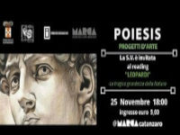

POIESIS -Progetti d'Arte- III Edizione Incontri di Teatro, Arte, Letteratura e Musica a cura del Teatro di Calabria. Con il patrocinio della Provincia di Catanzaro e della Fondazione Rocco Guglielmo.
"Ridete franco e forte, sopra qualunque cosa [...] Terribile e awful è la potenza del riso: chi ha il coraggio di ridere è padrone degli altri, come chi ha il coraggio di morire".
Così affermava Giacomo Leopardi, in uno dei suoi più celebri pensieri raccolti nello "Zibaldone" e datato settembre 1828, proprio nel pieno della stesura delle "Operette morali",
tra le opere più complesse e attuali della letteratura moderna. Errate letture scolastiche e critiche alle volte superficiali hanno consegnato a numerose generazioni di studenti
un'immagine di Leopardi alterata e parziale: un giovane consumato dal suo male fisico, preda dell'autocommiserazione e imprigionato in un'anima "vecchia". Scopo della serata sarà di riscoprire
un Leopardi innovativo e inaspettato: animato da una profonda ironia che talvolta rasenta la ferocia, autore di pagine intrise di lucidità e di una profondità filosofica di incredibile attualità.
Il prof. Luigi La Rosa e gli attori della Compagnia del Teatro di Calabria guideranno gli spettatori alla scoperta del pensiero del "giovane favoloso" di Recanati, attraverso l'interpretazione dei dialoghi
contenuti nelle "Operette morali" e dei pensieri di Leopardi.
INGRESSO: € 5,00 (POSTI LIMITATI).
Si ringraziano gli autori dell'articolo e la redazione di TEATRODICALABRIA FACEBOOK
Poiesis 25 Nov 2018 - Leopardi: La tragica grandezza della Natura
articolo locandina progetto del "Teatro di Calabria Aroldo Tieri" pubblicato nell'anno 2018
Aldo Conforto III Edizione Incontri di Teatro, Arte, Letteratura e Musica
Aldo Conforto attori della Compagnia del Teatro di Calabria
Aldo Conforto suoi più celebri pensieri raccolti nello "Zibaldone" e datato settembre 1828
hanno consegnato a numerose generazioni di studenti un'immagine di Leopardi alterata e parziale

Riccardo Conforto
https://aldoconforto.github.io/teatro/riccardo-conforto-design-e-gestione-del-sito
{kind=link}